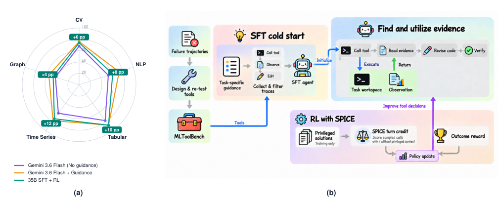
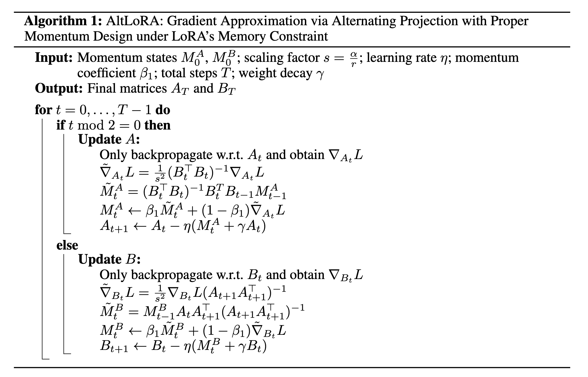
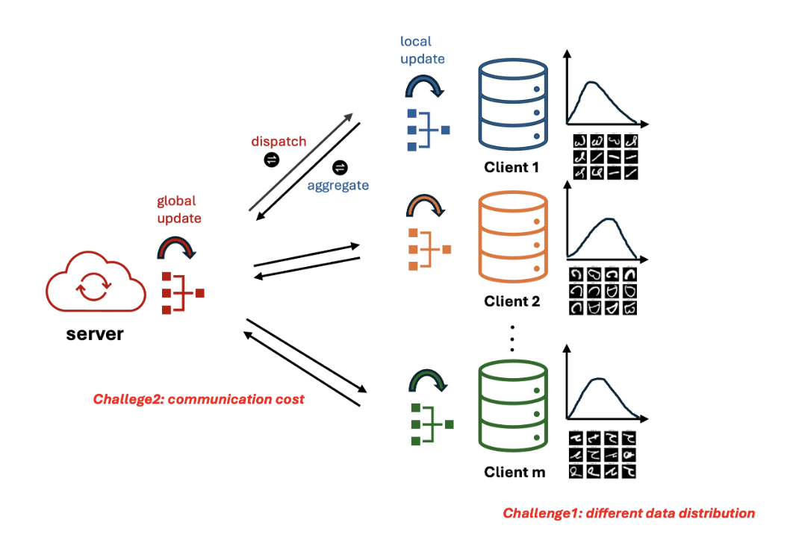

Student Researcher · Sunnyvale, CA
- Coding Agents
- Agent Post-Training
- Recursive Self-Improvement

I am currently a Ph.D. Candidate in Statistics at The Pennsylvania State University and am honored to be advised by Prof. Lingzhou Xue. Before that, I obtained my master's degree at Penn State in 2025 and obtained my bachelor's degree in Statistics from Nankai University in 2023. I was also fortunate to be supervised by Prof. Changliang Zou for my undergraduate thesis.
Student Researcher · Sunnyvale, CA
Research Scientist Intern · Menlo Park, CA
Research Scientist Intern · San Jose, CA
Research Scientist Intern · Seattle, WA
Intelligent Multimedia Group Intern · Beijing, China
See Google Scholar for an updated list of publications.

![[Preference-Based Self-Distillation: Beyond KL Matching via Reward Regularization]](Source_files/pbsd-figure1.png)
![[Towards Better Optimization For Listwise Preference in Diffusion Models]](Source_files/diffusion-lpo-card.svg)

